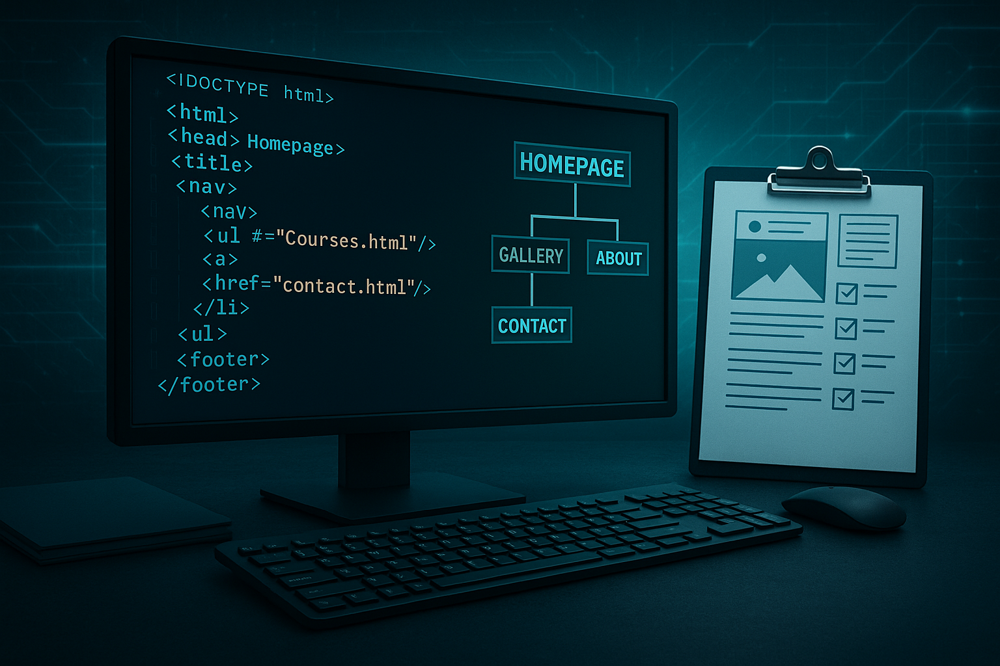

Nyhet 1

2025-08-12
Webbutveckling är ett av de snabbast växande områdena inom tech-branschen. Med nya teknologier som kommer varje år blir det allt viktigare att hålla sig uppdaterad. Under min utbildning har jag lärt mig grunderna i HTML5, CSS3 och responsiv design. Det är fascinerande att se hur en enkel kod kan förvandlas till en interaktiv och visuell upplevelse för användare över hela världen. Framtiden för webbutveckling ser ljus ut med AI integration och ännu mer avancerade verktyg.
Nyhet 2
2025-07-28
I dagens digitala värld används mobiler och surfplattor mer än någonsin. Därför är responsiv design inte längre en val, det är ett krav. Under kursen har jag lärt mig vikten av att skapa webbplatser som fungerar lika bra på en smartphone som på en stor desktop skärm. Genom att använda flexibla layouter och media kan vi säkerställa att alla användare får en optimal upplevelse oavsett enhet. Det är utmanande men otroligt tillfredsställande när allt fungerar perfekt!
Nyhet 3

2025-07-15
Att skapa min första kompletta webbplats har varit en lärorik resa! Från att planera strukturen med sitemap till att faktiskt koda varje sida - varje steg har lärt mig något nytt. Jag har arbetat med allt från navigation och formulär till bildgallerier och tabeller. Det som började som tomma HTML-filer har nu blivit en funktionell webbplats med flera undersidor. Jag är stolt över resultatet och ser fram emot att utveckla mina färdigheter ytterligare i kommande kurser. Detta är bara början!